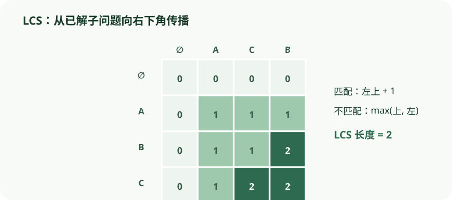

推进 LCS 表格，观察每个状态只依赖左、上与左上三个已解子问题。
依据本地课程资料 lectures/chap6.pdf、dis08.pdf 重绘；交互用于解释算法状态与证明不变量，不替代正文中的完整论证。

CS170 · 第 7 讲
系统建立状态、转移、边界与恢复路径的方法，并用序列、图和组合优化实例练习。
动态规划（Dynamic Programming, DP）是一种适用范围极广的算法范式：当分治、图探索、贪心等专门技巧失效时，它往往是最后的「大锤」。它的核心做法是把原问题拆成一组子问题（subproblems），按某种顺序逐一求解，并利用已求出的小问题的答案来帮助求解更大的问题，直到全部解决。
DAG 上的最短路径为何是 DP 的天然原型。 在第 4 章我们已看到，最短路径在有向无环图（DAG）上特别容易：DAG 的节点可以被线性化（linearize）——即排成一条直线，使得所有边都从左指向右（这正是拓扑序，topological ordering，见图 6.1）。
假设要求从源点 \(S\) 到所有节点的距离。以节点 \(D\) 为例，能到达 \(D\) 的只有它的前驱 \(B\) 和 \(C\)，因此 \(\operatorname{dist}(D) = \min\{\operatorname{dist}(B)+1,\; \operatorname{dist}(C)+3\}\)。每个节点都满足类似的关系。如果我们按线性化的从左到右顺序计算 \(\operatorname{dist}\) 值，则到达任意节点 \(v\) 时，所有前驱的 \(\operatorname{dist}\) 都已求出——信息已「就绪」。于是所有距离可在一趟（single pass）内算完。
DP 本质。 该算法实际上在解一组子问题 \(\{\operatorname{dist}(u) : u \in V\}\)。我们从最小的子问题 \(\operatorname{dist}(s)=0\) 起步，然后逐步推进到「更大」的节点（即在线性化中更靠后的节点）。这是一类非常通用的技巧：在每个节点上计算其前驱节点值的某个函数。本例中是「和的 \(\min\)」，但同样可以换成 \(\max\)（得到 DAG 上的最长路径），或把括号里的和换成积。
DP 的隐式 DAG。 在动态规划中，我们并不会被显式地给出一张 DAG；这张 DAG 是隐含的：每个节点是一个子问题，每条边代表子问题之间的依赖关系——若解子问题 \(B\) 需要先知道子问题 \(A\) 的答案，则存在一条（概念上的）边 \(A \to B\)。此时称 \(A\) 是比 \(B\) 更小的子问题。DP 的关键性质 (*) 是：子问题上存在一个顺序，使得每个子问题的解都可由排在前面的「更小」子问题的解推出。
具体数据示例（对应图 6.1）。 设 DAG 的节点顺序为 \(S, C, A, B, D, E\)，边与权重：\(S \to C\) (4), \(S \to A\) (6), \(C \to B\) (3), \(C \to D\) (1), \(A \to B\) (1), \(B \to D\) (2), \(B \to E\) (1), \(D \to E\) (1)。
按从左到右顺序计算 \(\operatorname{dist}\)（源点 \(S\)）：
\(\operatorname{dist}(S) = 0\)
\(\operatorname{dist}(C) = \operatorname{dist}(S) + 4 = 4\)
\(\operatorname{dist}(A) = \operatorname{dist}(S) + 6 = 6\)
\(\operatorname{dist}(B) = \min\{\operatorname{dist}(C)+3,\; \operatorname{dist}(A)+1\} = \min\{7, 7\} = 7\)
\(\operatorname{dist}(D) = \min\{\operatorname{dist}(C)+1,\; \operatorname{dist}(B)+2\} = \min\{5, 9\} = 5\)
\(\operatorname{dist}(E) = \min\{\operatorname{dist}(B)+1,\; \operatorname{dist}(D)+1\} = \min\{8, 6\} = 6\)
验证节点 \(D\)：路径 \(S \to C \to D\)（代价 5）、\(S \to C \to B \to D\)（代价 9）、\(S \to A \to B \to D\)（代价 9），最小值为 5，与递推一致。计算 \(\operatorname{dist}(D)\) 时，\(\operatorname{dist}(C)\) 与 \(\operatorname{dist}(B)\) 都已被提前算好——这正是线性化顺序保证的「前驱信息就绪」。
问题。 输入数列 \(a_1, a_2, \ldots, a_n\)。一个子序列（subsequence）是按原顺序取出的任意子集 \(a_{i_1}, a_{i_2}, \ldots, a_{i_k}\)（\(1 \le i_1 < i_2 < \cdots < i_k \le n\)）。若子序列的数严格递增，则称其为递增 subsequence。目标是找到长度最长的递增 subsequence。例如 \(5, 2, 8, 6, 3, 6, 9, 7\) 的 LIS 为 \(2, 3, 6, 9\)（长度 4）。
建模为 DAG 上的最长路径。 为每个元素 \(a_i\) 建节点 \(i\)；当 \(a_i\) 与 \(a_j\) 可在某递增 subsequence 中相邻时（即 \(i < j\) 且 \(a_i < a_j\)），加有向边 \((i, j)\)。该图是 DAG（所有边 \(i<j\) 不可能成环），且递增 subsequence 与该 DAG 上的路径一一对应。原问题等价于求该 DAG 的最长路径。
子问题与递推。 定义子问题 \(L(j)\) 为「以位置 \(j\) 结尾的最长递增 subsequence 的长度」（按节点计数）。考虑任意一条到节点 \(j\) 的最长路径，它必然经过 \(j\) 的某个前驱 \(i\)，因此
\[ L(j) = 1 + \max\{\,L(i) : (i,j) \in E\} \]
若 \(j\) 没有入边（空集上的 \(\max\) 定义为 0），则 \(L(j)=1\)。最终答案为 \(\max_j L(j)\)。
正确性（不变量）。 按 \(j=1,2,\ldots,n\) 顺序计算时，当处理节点 \(j\)，其所有前驱 \(i<j\) 的 \(L(i)\) 都已求出——满足 DP 性质 (*)。
复杂度。 为高效求前驱，可事先构造反向图 \(G^R\) 的邻接表（线性时间，见习题 3.5）。计算 \(L(j)\) 耗时与 \(j\) 的入度成正比，总时间 \(\Theta(|E|)\)，最坏情况（输入已递增排序）下 \(|E| = O(n^2)\)。
还原具体子序列。 仅记 \(L\) 值只能得到最优长度。在计算 \(L(j)\) 时额外记录 \(\operatorname{prev}(j)\)——即到 \(j\) 的最长路径上倒数第二个节点——最后沿回溯指针（backpointers）倒推即可还原整个 LIS。
递归？不要，谢谢。 \(L(j)\) 的公式也暗示一种递归算法，但在 DAG 包含所有 \((i,j)\)（\(i<j\)）的极端情形下（即输入已排序），递推退化为 \(L(j) = 1 + \max\{L(1),\ldots,L(j-1)\}\)，其递归树会重复求解相同子问题，节点数指数增长。
这与分治形成鲜明对比：分治中每个子问题显著更小（如归并排序把规模 \(n\) 折半为 \(n/2\)），递归树深度仅 \(O(\log n)\)、节点数多项式。而典型 DP 中每个子问题只略小一点（如 \(L(j)\) 依赖 \(L(j-1)\) 等），递归树深度多项式但节点数指数级——只是其中大量节点是重复的。DP 的高效正来自显式枚举不同子问题并按正确顺序逐一求解。
LIS 具体数据示例。 输入序列：\(5, 2, 8, 6, 3, 6, 9, 7\)（位置 \(1\ldots8\)）。
按 \(j=1\) 到 \(8\) 计算 \(L(j)\)：
\(j=1\)（值 5）：无前驱 → \(L(1)=1\)
\(j=2\)（值 2）：无比 2 小的数 → \(L(2)=1\)
\(j=3\)（值 8）：前驱 5, 2 → \(L(3) = 1 + \max\{1,1\} = 2\)
\(j=4\)（值 6）：前驱 5, 2 → \(L(4) = 1 + \max\{1,1\} = 2\)
\(j=5\)（值 3）：前驱 2 → \(L(5) = 1 + \max\{1\} = 2\)
\(j=6\)（值 6）：前驱 5, 2, 3 → \(L(6) = 1 + \max\{1,1,2\} = 3\)
\(j=7\)（值 9）：前驱 5, 2, 8, 6, 3, 6（位置 1–6 中值 \(<9\) 者）→ \(L(7) = 1 + \max\{1,1,2,2,2,3\} = 4\)
\(j=8\)（值 7）：前驱 5, 2, 6, 3, 6（位置 1, 2, 4, 5, 6 中值 \(<7\) 者）→ \(L(8) = 1 + \max\{1,1,2,2,3\} = 4\)
最终 \(\max_j L(j) = 4\)。若维护 \(\prev\) 指针，沿 \(j=7\)（\(L=4\)）回溯：\(7 \to 6 \to 5 \to 2\)（位置），反转得 subsequence \(a_2, a_5, a_6, a_7 = 2, 3, 6, 9\)。
为何不能朴素递归： 若把 \(L(7)\) 写成递归，它会调用 \(L(6)\)、\(L(6)\) 又调用 \(L(5)\)、……，同一子问题被层层重算，调用树节点数指数于 \(n\)；而 DP 对每个 \(j\) 只算一次，总计 \(O(n^2)\)。
动机与定义。 拼写检查器遇到可疑拼错时，要在词典里找「最接近」的词。衡量两个串距离的自然方式是对齐（alignment）：把两串上下书写，允许插入空位（gap）。例如 SNOWY 与 SUNNY 的两种对齐代价分别为 3 和 5。
代价（cost） 定义为字母不同的列数。编辑距离（edit distance） 就是两串所有对齐中代价最小的那个。上例中最优代价为 3。编辑距离也可理解为把第一个串变为第二个串所需的最少编辑操作（插入、删除、替换）次数。
子问题选择。 求串 \(x[1\ldots m]\) 与 \(y[1\ldots n]\) 的编辑距离。这里取 \(x\) 的某个前缀 \(x[1\ldots i]\) 与 \(y\) 的某个前缀 \(y[1\ldots j]\) 之间的编辑距离，记为 \(E(i,j)\)。最终目标是 \(E(m,n)\)。
右端列的三种情况。 考虑 \(x[1\ldots i]\) 与 \(y[1\ldots j]\) 的最优对齐，它的最右列只能是三者之一： 1. \(x[i]\) 与空位对齐（删除 \(x[i]\)）：本列代价 1，剩余子问题 \(E(i-1,j)\)； 2. 空位与 \(y[j]\) 对齐（插入 \(y[j]\)）：本列代价 1，剩余子问题 \(E(i,j-1)\)； 3. \(x[i]\) 与 \(y[j]\) 对齐（匹配/替换）：本列代价为 \(\operatorname{diff}(i,j)\)（\(x[i]=y[j]\) 时为 0，否则为 1），剩余子问题 \(E(i-1,j-1)\)。
三者都不确定该选谁，故全试取最优：
\[ E(i,j) = \min\begin{cases}1 + E(i-1,j) \\ 1 + E(i,j-1) \\ \operatorname{diff}(i,j) + E(i-1,j-1)\end{cases} \quad\text{其中 } \operatorname{diff}(i,j)=\begin{cases}0 & x[i]=y[j] \\ 1 & x[i] \neq y[j]\end{cases} \]
填表顺序。 只要保证 \(E(i-1,j)\)、\(E(i,j-1)\)、\(E(i-1,j-1)\) 在 \(E(i,j)\) 之前算好，任意顺序都行。
基例。 \(E(0,j)\) 是空串与 \(y\) 的前 \(j\) 个字母的距离：需 \(j\) 次插入，故 \(E(0,j)=j\)；同理 \(E(i,0)=i\)。
算法与复杂度。
for i = 0..m: E(i,0) = i
for j = 1..n: E(0,j) = j
for i = 1..m:
for j = 1..n:
E(i,j) = min( E(i-1,j)+1, E(i,j-1)+1, E(i-1,j-1)+diff(i,j) )
return E(m,n)
每格常数时间，总计 \(O(mn)\)。
底层 DAG。 每个 DP 都有底层 DAG：节点=子问题（位置 \((i,j)\)），边=优先约束——\((i-1,j) \to (i,j)\)、\((i,j-1) \to (i,j)\)、\((i-1,j-1) \to (i,j)\)。若把所有边长设为 1，唯独当 \(x[i]=y[j]\) 的对角线边 \((i-1,j-1) \to (i,j)\) 长为 0，则编辑距离就等于 DAG 中从 \(s=(0,0)\) 到 \(t=(m,n)\) 的最短路径距离！向下走=删除，向右走=插入，对角走=匹配或替换。
具体数据示例：EXPONENTIAL 与 POLYNOMIAL。 记 \(x = \texttt{EXPONENTIAL}\)（\(m=11\)），\(y = \texttt{POLYNOMIAL}\)（\(n=10\)）。子问题 \(E(4,3)\) 对应前缀 EXPO 与 POL。其最优对齐的最右列必为三者之一：O 与空位（删除）、空位与 L（插入）、O 与 L（替换，因 O≠L）。故 \(E(4,3) = \min\{1+E(3,3),\; 1+E(4,2),\; 1+E(3,2)\}\)。
按行优先顺序把整张表（\(12 \times 11\)）填完，右下角 \(E(11,10)\) 即为答案。最终结果为 6，一种最优对齐：
E X P O N E N T I A L
P O L Y N O M I A L
代价为 6。该对齐对应底层 DAG 中从 \((0,0)\) 到 \((11,10)\) 的一条最短路径，路径长度 6。
问题。 背包容量上限 \(W\) 磅，\(n\) 件物品，第 \(i\) 件重 \(w_i\) 磅、价值 \(v_i\) 美元。要选出能放入背包的物品组合使总价值最大。有两种版本：
允许重复（unbounded）：每种物品数量无限；
不允许重复（0-1）：每种物品至多一件。
两种版本都不太可能有多项式时间算法，但用 DP 都能在 \(O(nW)\) 时间内求解——当 \(W\) 较小时很实用，但严格说这不是多项式时间，因为输入规模是 \(\log W\) 而非 \(W\)（即伪多项式时间）。
允许重复。 子问题定义为背包容量的函数：\(K(w)\) = 容量为 \(w\) 的背包所能装下的最大价值。
\[ K(w) = \max_{\,i : \; w_i \le w} \{\, K(w-w_i) + v_i \,\} \]
（空集上 \(\max\) 定义为 0。）
K(0) = 0
for w = 1 .. W:
K(w) = max{ K(w-w_i) + v_i : w_i ≤ w }
return K(W)
一维表，从左到右填；每格最多试 \(n\) 个物品，总计 \(O(nW)\)。
不允许重复。 上一子问题失效：光知道 \(K(w-w_n)\) 的值没用，因为不知道物品 \(n\) 是否已在此部分解中被用过。必须给子问题增加第二维参数：\(K(w,j)\) = 容量 \(w\)、只允许用物品 \(1\ldots j\) 时的最大价值。目标 \(K(W,n)\)。
\[ K(w,j) = \max\begin{cases}K(w, j-1) & \text{（不用物品 } j\text{）} \\ K(w-w_j, j-1) + v_j & \text{（用物品 } j\text{，仅当 } w_j \le w\text{）}\end{cases} \]
初始化 K(0,j)=0, K(w,0)=0
for j = 1 .. n:
for w = 1 .. W:
if w_j > w: K(w,j) = K(w, j-1)
else: K(w,j) = max( K(w, j-1), K(w-w_j, j-1)+v_j )
return K(W,n)
二维表 \((W+1) \times (n+1)\)，每格常数时间，总计仍为 \(O(nW)\)。
记忆化（Memoization）。 DP 的自底向上填表也可以改成带缓存的递归：用一个哈希表存已求出的 \(K(w)\)，每次递归调用前先查表，求过就直接返回。由于每个子问题只解一次，复杂度仍是 \(O(nW)\)，但常数因子更大（递归与哈希表开销）。记忆化的优势在于：DP 会求解所有可能被用到的子问题，而记忆化只求解实际被用到的那些。例如若 \(W\) 与所有 \(w_i\) 都是 100 的倍数，则不被 100 整除的 \(w\) 对应的子问题 \(K(w)\) 永远不会被用到——记忆化版本根本不会去碰这些多余表项。
背包具体数据示例（允许重复 vs 不允许重复）。 容量 \(W=10\)，4 件物品：
| 物品 \(i\) | 重量 \(w_i\) | 价值 \(v_i\) |
|---|---|---|
| 1 | 6 | \$30 |
| 2 | 3 | \$14 |
| 3 | 4 | \$16 |
| 4 | 2 | \$9 |
允许重复版本（子问题 \(K(w)\)，\(w=0\ldots10\)）：
\(K(0)=0\), \(K(1)=0\)
\(K(2)=K(0)+9=9\)（物品 4）
\(K(3)=\max\{K(0)+14,\ldots\}=14\)（物品 2）
\(K(4)=\max\{K(1)+14,\;K(0)+16\}=16\)（物品 3）
\(K(5)=\max\{K(2)+14=23,\;K(1)+16\}=23\)（物品 2+4）
\(K(6)=\max\{K(3)+14=28,\;K(2)+16=25,\;K(0)+30=30\}=30\)（物品 1）
\(K(7)=\max\{K(4)+14=30,\;K(3)+16=30,\;K(1)+30\}=30\)
\(K(8)=\max\{K(5)+14=37,\;K(4)+16=32,\;K(2)+30=39\}=39\)（物品 1+4）
\(K(9)=\max\{K(6)+14=44,\;K(5)+16=39,\;K(3)+30=44\}=44\)
\(K(10)=\max\{K(7)+14=44,\;K(6)+16=46,\;K(4)+30=48\}=48\)（物品 1+4+4）
允许重复时最优价值 \$48（物品 1 一件 + 物品 4 两件，总重 \(6+2+2=10\)）。
不允许重复版本：填二维表后可得 \(K(10,4) =\) \$46，对应物品 1（重 6，\$30）+ 物品 3（重 4，\$16），总重 10。对比可见，允许重复时因物品 4 可多拿而更优。
在网络通信中，路径上每多一条边就多一次"跳转"（hop），而每次跳转都带来丢包等不确定因素。因此，我们有时宁愿接受稍长的总距离，也要限制路径上的边数。这就引出了限制边数的最短路径问题。
问题描述：给定带边长的图 \(G\)、起点 \(s\)、终点 \(t\) 和整数 \(k\)，求从 \(s\) 到 \(t\) 的、至多使用 \(k\) 条边的最短路径。
为什么 Dijkstra 算法不能直接套用：Dijkstra 算法只追踪"距离最短"，却不"记住"路径已经用了多少条边。一旦加入边数限制，跳数就成了不可忽略的关键信息——一条距离略长但边数更少的路径，在可靠性约束下反而更优。
动态规划建模：技巧在于设计能记住所有关键信息的子问题。对每个顶点 \(v\) 和每个整数 \(i \le k\)，定义：
初始条件：
\(\text{dist}(s, 0) = 0\)
\(\text{dist}(v, 0) = \infty\)（\(v \ne s\)）
状态转移：要恰好用 \(i\) 条边到达 \(v\)，路径必然从某个邻居 \(u\) 用 \(i-1\) 条边到达，再经过边 \((u, v)\)：
\[\text{dist}(v, i) = \min_{(u,v) \in E} \{\text{dist}(u, i-1) + \ell(u,v)\}\]
答案：\(\min_{0 \le i \le k} \text{dist}(t, i)\)。
复杂度：对每个 \(i = 1\) 到 \(k\)，遍历所有边一次，总时间 \(O(k|E|)\)。当 \(k\) 远小于 \(|V|\) 时，这比完整的单源最短路径算法更高效。
这个例子展示了动态规划的核心思路：通过扩展状态空间来记录贪心算法无法兼顾的约束条件。
问题描述：求图中所有顶点对之间的最短路径长度。图中可能含有负权边，但不含负权环。
朴素做法：对每个顶点运行一次单源最短路径算法，总时间 \(O(|V|^2|E|)\)。Floyd-Warshall 算法用动态规划做到了 \(O(|V|^3)\)。
子问题定义：将顶点编号为 \(1, 2, \ldots, n\)。定义 \(\text{dist}(i, j, k)\) 为：从 \(i\) 到 \(j\) 的、只允许以 \(\{1, 2, \ldots, k\}\) 中的节点作为中间节点的最短路径长度。
初始条件：\(\text{dist}(i, j, 0)\) 就是边 \((i, j)\) 的长度（若存在），否则为 \(\infty\)；\(\text{dist}(i, i, 0) = 0\)。
状态转移：当把节点 \(k\) 加入允许的中间节点集合时，检查所有顶点对 \((i, j)\)，看经过 \(k\) 是否能得到更短的路径。关键在于：一条使用 \(k\) 以及可能其他编号更小中间节点的最短路径，只会经过 \(k\) 恰好一次（因为假设没有负权环，重复经过 \(k\) 会形成可删除的零权或正权环）。因此：
\[\text{dist}(i, j, k) = \min\{\text{dist}(i, k, k-1) + \text{dist}(k, j, k-1),\ \text{dist}(i, j, k-1)\}\]
伪代码：
for i = 1 to n:
for j = 1 to n:
dist[i][j] = ∞
for all (i,j) in E:
dist[i][j] = ℓ(i,j)
for k = 1 to n:
for i = 1 to n:
for j = 1 to n:
dist[i][j] = min(dist[i][k] + dist[k][j], dist[i][j])
复杂度：三重循环，时间 \(O(|V|^3)\)。空间上只需两个 \(n \times n\) 数组（分别存 \(k-1\) 层和 \(k\) 层），因为 \(\text{dist}(\cdot,\cdot,k)\) 只依赖 \(\text{dist}(\cdot,\cdot,k-1)\)，空间 \(O(|V|^2)\)。
考虑 4 个顶点的图，边及权重为：\((1,2)=3,\ (1,3)=8,\ (2,3)=1,\ (2,4)=5,\ (3,4)=2\)。
\(k=0\)（仅直接边）：
| 1 | 2 | 3 | 4 | |
|---|---|---|---|---|
| 1 | 0 | 3 | 8 | ∞ |
| 2 | 3 | 0 | 1 | 5 |
| 3 | 8 | 1 | 0 | 2 |
| 4 | ∞ | 5 | 2 | 0 |
\(k=1\)（允许中间节点 \(\{1\}\)）：经检查，没有路径因加入节点 1 而缩短，矩阵不变。
\(k=2\)（允许中间节点 \(\{1,2\}\)）：
\(\text{dist}(1,3) = \min(3+1,\ 8) = 4\) ✓
\(\text{dist}(1,4) = \min(3+5,\ ∞) = 8\) ✓
\(\text{dist}(3,1) = \min(1+3,\ 8) = 4\)
\(\text{dist}(4,1) = \min(5+3,\ ∞) = 8\)
\(k=3\)（允许中间节点 \(\{1,2,3\}\)）：
\(\text{dist}(1,4) = \min(4+2,\ 8) = 6\) ✓
\(\text{dist}(2,4) = \min(1+2,\ 5) = 3\) ✓
\(\text{dist}(4,1) = \min(2+4,\ 8) = 6\)
\(\text{dist}(4,2) = \min(2+1,\ 5) = 3\)
\(k=4\)（允许所有中间节点）：矩阵不再变化。
最终全源最短路径：
| 1 | 2 | 3 | 4 | |
|---|---|---|---|---|
| 1 | 0 | 3 | 4 | 6 |
| 2 | 3 | 0 | 1 | 3 |
| 3 | 4 | 1 | 0 | 2 |
| 4 | 6 | 3 | 2 | 0 |
问题描述：旅行商从家乡（城市 1）出发，恰好访问其余每个城市一次后返回，求总路程最短的环路。给定城市间距离矩阵 \(D = (d_{ij})\)。
暴力枚举：\((n-1)!\) 种排列，时间 \(O(n!)\)。
动态规划：子问题是"部分路径"。对包含城市 1 的子集 \(S \subseteq \{1,\ldots,n\}\) 和终点 \(j \in S\)，定义：
初始条件：\(C(\{1\}, 1) = 0\)。当 \(|S| > 1\) 时，\(C(S, 1) = \infty\)（路径不能起止于同一城市 1）。
状态转移：倒数第二个城市必为 \(S \setminus \{j\}\) 中的某个 \(i\)：
\[C(S, j) = \min_{i \in S,\ i \ne j} \{C(S \setminus \{j\}, i) + d_{ij}\}\]
伪代码：
C({1}, 1) = 0
for s = 2 to n:
for all subsets S of size s containing 1:
C(S, 1) = ∞
for all j in S, j ≠ 1:
C(S, j) = min{C(S\{j}, i) + d_ij : i ∈ S, i ≠ j}
return min_j C({1,...,n}, j) + d_j1
复杂度：最多 \(2^n \cdot n\) 个子问题，每个耗时 \(O(n)\)，总时间 \(O(n^2 \cdot 2^n)\)。虽非多项式时间，但远优于 \(O(n!)\)。
独立集问题：节点子集 \(S\) 中任意两个节点之间没有边相连，称为独立集。一般图上的最大独立集问题被认为是难解的，但在树上可以线性时间求解。
算法思路：任选一个节点 \(r\) 将树有根化。对每个节点 \(u\)，定义子问题：
状态转移：对节点 \(u\) 分两种情况讨论：
包含 \(u\)：得 1 分，但不能包含 \(u\) 的子节点，只能考虑孙节点
不包含 \(u\)：不得分，但可以考虑子节点
\[I(u) = \max\left\{1 + \sum_{\text{grandchildren } w \text{ of } u} I(w),\quad \sum_{\text{children } w \text{ of } u} I(w)\right\}\]
复杂度：子问题数等于节点数 \(|V|\)，自底向上计算，总时间 \(O(|V| + |E|) = O(|V|)\)（树中 \(|E| = |V|-1\)）。
动态规划的时间与内存：
时间：动态规划算法的运行时间往往等于子问题 DAG 中的边数。每个子问题只被求解一次，每次处理其入边并做常数时间工作。
内存：并非所有子问题值都需要同时保存。一个子问题的值只在"依赖于它的更大子问题"求解期间需要，之后便可释放。例如 Floyd-Warshall 只需保存两层（\(k-1\) 和 \(k\)），空间从 \(O(n^3)\) 降到 \(O(n^2)\)。
依据本地课程资料 lectures/chap6.pdf、dis08.pdf 重绘；交互用于解释算法状态与证明不变量，不替代正文中的完整论证。

朴素递归与 DP 的本质区别不在于「加缓存」，而在于**子问题的规模衰减速度**。分治递归每层规模骤降（如减半），树深对数、节点多项式，天然高效；典型 DP 每层规模只略缩（如 \(L(j)\) 依赖 \(L(j-1)\)），递归树深多项式、节点指数级，大量节点重复。加缓存（记忆化）只是事后补救；DP 的正统做法是显式枚举不同子问题并按拓扑序自底向上求解。
\(O(nW)\) 并不是输入规模的多项式。输入中容量 \(W\) 用二进制编码只需 \(\log W\) 位，因此 \(O(nW)\) 相对于真实输入规模是指数级的——这叫**伪多项式时间（pseudo-polynomial time）**。只有当 \(W\) 本身不太大时它才实用。
只要保证计算 \(E(i,j)\) 时 \(E(i-1,j)\)、\(E(i,j-1)\)、\(E(i-1,j-1)\) 已求出，**任意顺序都对**——先行后列、先列后行、甚至按反对角线顺序均可。先行后列只是最直观的一种。
Dijkstra 只记录距离而不记录边数，无法区分"距离短但边数多"和"距离略长但边数少"的路径。必须用 \(\text{dist}(v,i)\) 同时记录位置和边数，才能正确处理边数约束。
\(\text{dist}(\cdot,\cdot,k)\) 只依赖 \(\text{dist}(\cdot,\cdot,k-1)\)，因此只需两个 \(n \times n\) 数组交替使用，空间为 \(O(n^2)\)。
问题：在最长递增 subsequence（LIS）的动态规划解法中，我们对每个位置 \(j\) 计算 \(L(j) = 1 + \max\{L(i) : i<j,\; a_i<a_j\}\)。以下哪一项最能解释为什么我们只需考虑位置 \(j\) 的「前驱」\((i,j)\)，而无需考虑 \(j\) 的「后继」？
问题：在编辑距离 DP 中，子问题 \(E(i,j)\) 表示前缀 \(x[1\ldots i]\) 与 \(y[1\ldots j]\) 的编辑距离。关于基例 \(E(0,j)\) 与 \(E(i,0)\)，下列哪项正确？
问题：Floyd-Warshall 算法中，为什么从 \(i\) 到 \(j\) 且使用节点 \(k\) 的最短路径只会经过 \(k\) 恰好一次？
问题：关于旅行商问题（TSP）的动态规划解法，下列哪项正确？
lectures/chap6.pdf · 本段对应小节 · confidence: high · 线性化后按左到右顺序计算 dist(v)=min{dist(u)+ℓ(u,v)}；DP 的隐式 DAG：节点=子问题，边=依赖关系。lectures/chap6.pdf · 本段对应小节 · confidence: high · 节点 i 对应 ai，边 (i,j) 当 i<j 且 ai<aj；L(j)=1+max{L(i):(i,j)∈E}；已排序输入下递归树指数节点。lectures/chap6.pdf · 本段对应小节 · confidence: high · E(i,j)=min{1+E(i-1,j), 1+E(i,j-1), diff(i,j)+E(i-1,j-1)}；底层 DAG 中 s=(0,0) 到 t=(m,n) 的最短路径距离 = 编辑距离。lectures/chap6.pdf · 本段对应小节 · confidence: high · 允许重复 K(w)=max{K(w-wi)+vi}；不允许重复 K(w,j)=max{K(w,j-1), K(w-wj,j-1)+vj}；记忆化用哈希表缓存。lectures/chap6.pdf · 本段对应小节 · confidence: high · 6.6 Shortest paths (Shortest reliable paths, All-pairs shortest paths, TSP) 与 6.7 Independent sets in trees 及 On time and memory 小节